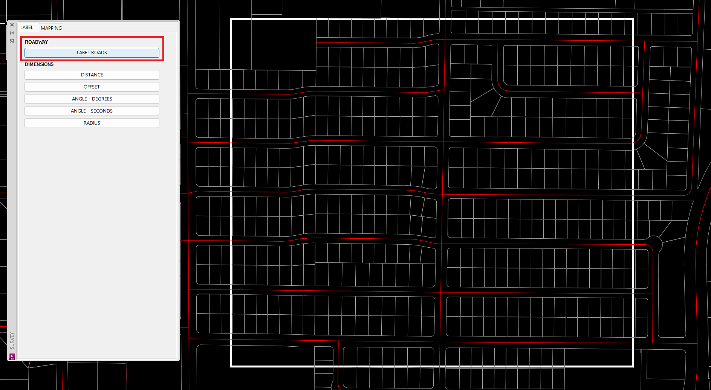
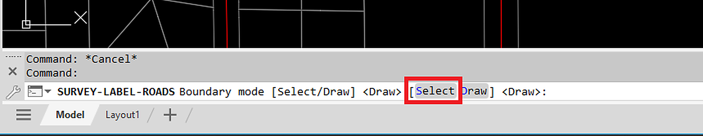
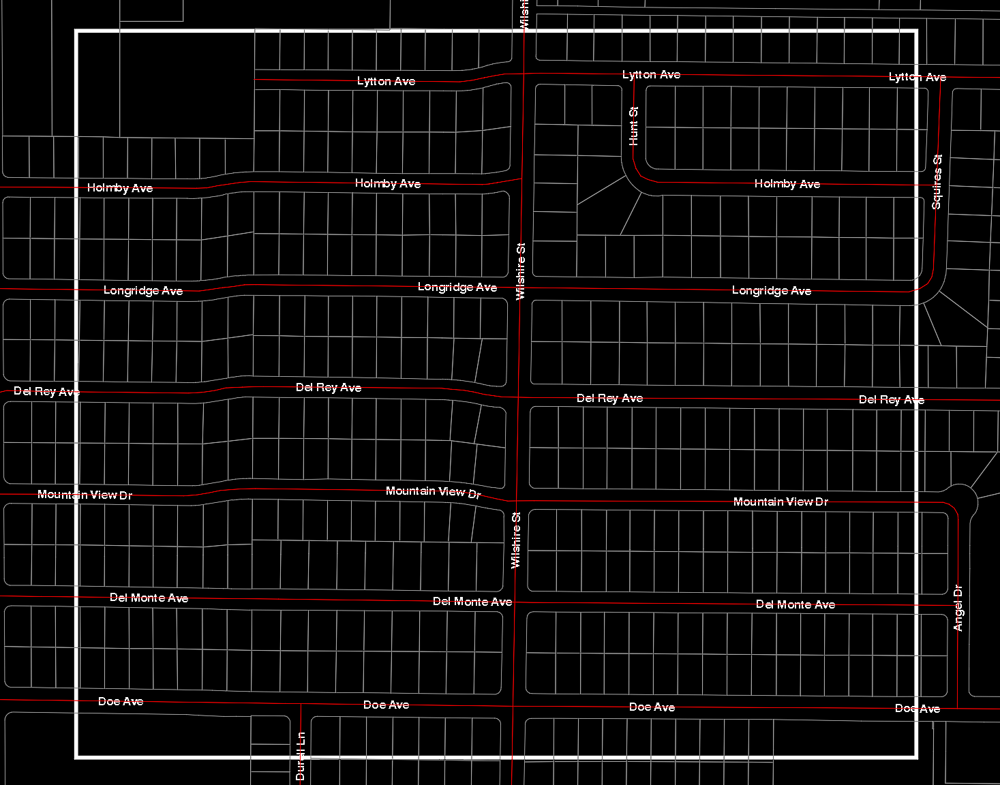
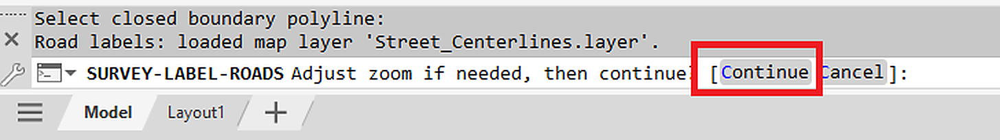
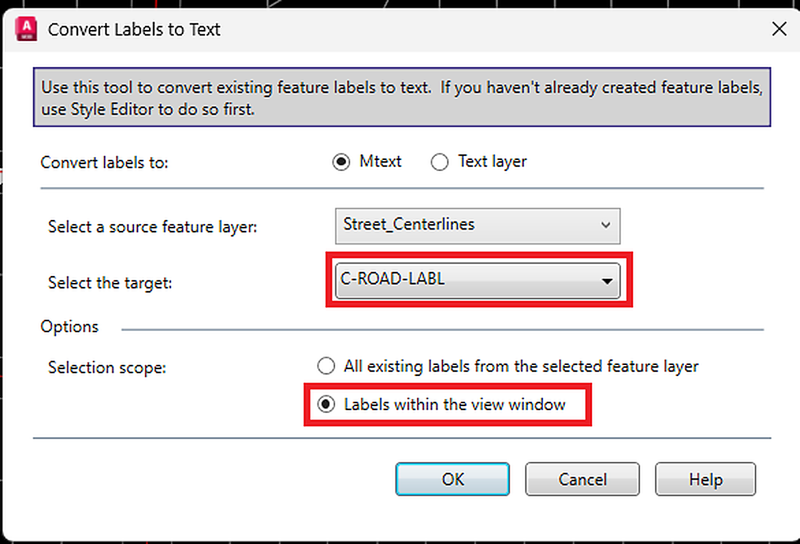
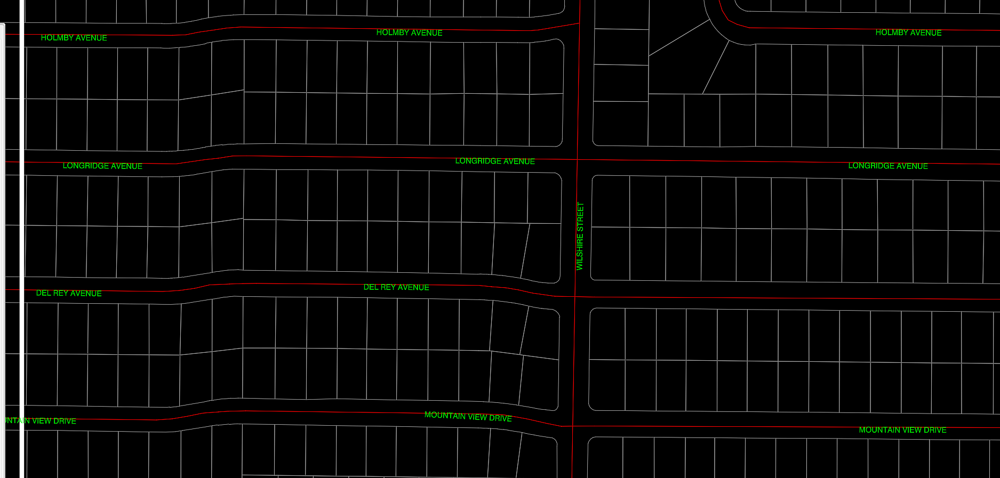

LABEL ROADS
Creates roadway name labels from GIS street centerline data. The project must be geolocated and have the correct coordinate system assigned before running this command.
Result: Roadway labels are created from available GIS data inside the selected boundary area. Some cleanup may still be required, such as removing duplicate labels or adjusting labels that do not land in the preferred location.
Critical setting — Step 5: In the Convert Labels to Text dialog, set Selection Scope to Labels within the view window. Do not leave it set to the full data set, or Civil 3D may attempt to create labels for the entire GIS data set and lock up the drawing.
Before You Start
- Confirm the drawing is geolocated.
- Confirm the correct coordinate system is assigned.
- Zoom near the project area where labels are needed. The current view window will be used to control which labels are converted.
- Use a boundary that covers the desired label area only.
- Be ready to set the label conversion target layer to C-ROAD-LABL.






Notes
- If no GIS road data exists inside the selected area, no roadway labels will be created.
- The command is intended to speed up roadway labeling, not replace final drafting review.
- After labels are created, verify the text height, layer, and label locations before plotting or issuing drawings.
- Selection Scope should remain Labels within the view window for this workflow. Using a larger scope can make the drawing appear locked up while Civil 3D processes too many GIS labels.